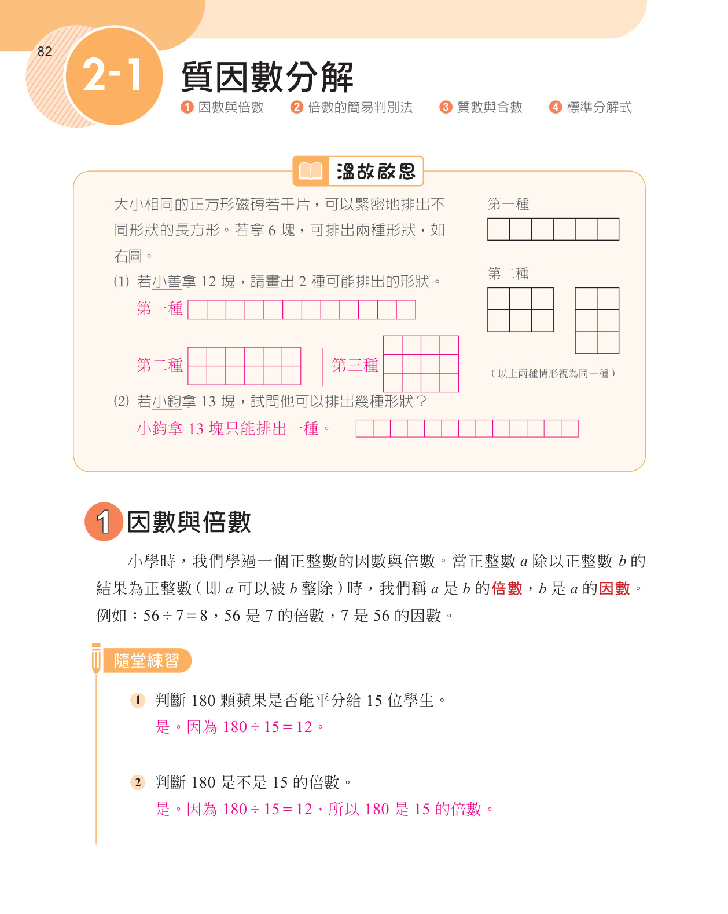
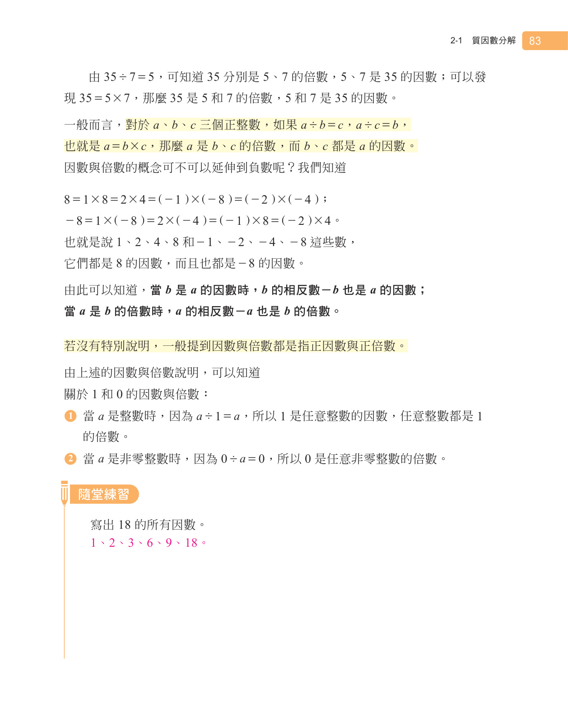

七上 2-1 質因數分解
電子書
第
頁 / 20 頁
|
|
100%
|
書籤
小考卷
筆記
細
中
粗


上一頁
第
1
/ 20 頁
下一頁
2-1 質因數分解 · 小考練習卷說明
📋 考卷規格與要求總覽
單元內容：
七年級上冊「2-1 質因數分解」
題型配置：
選擇題 7 題（每題 8 分共 56 分）、填充題 5 題（共 44 分）
滿分計分：
100 分
分頁嚴格規範：
第 1 頁完整題目卷
，
第 2 頁完整解答與詳解版
📄 Word 考卷檔案已生成並保存在本機資料夾中。